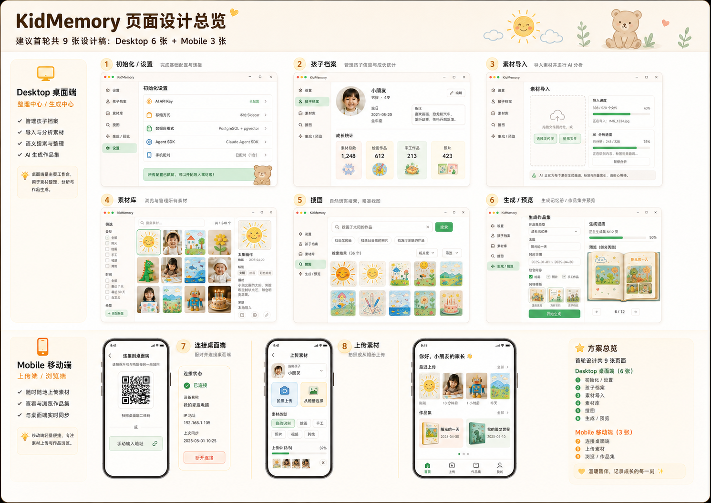
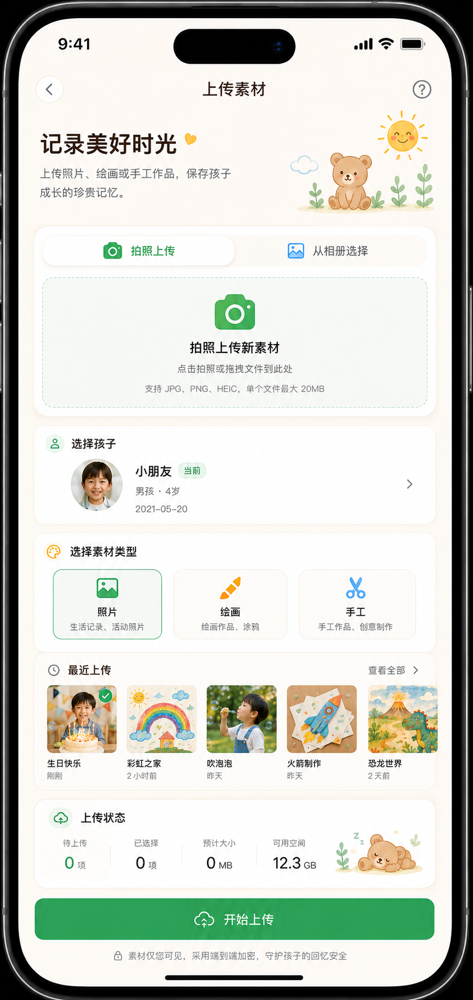
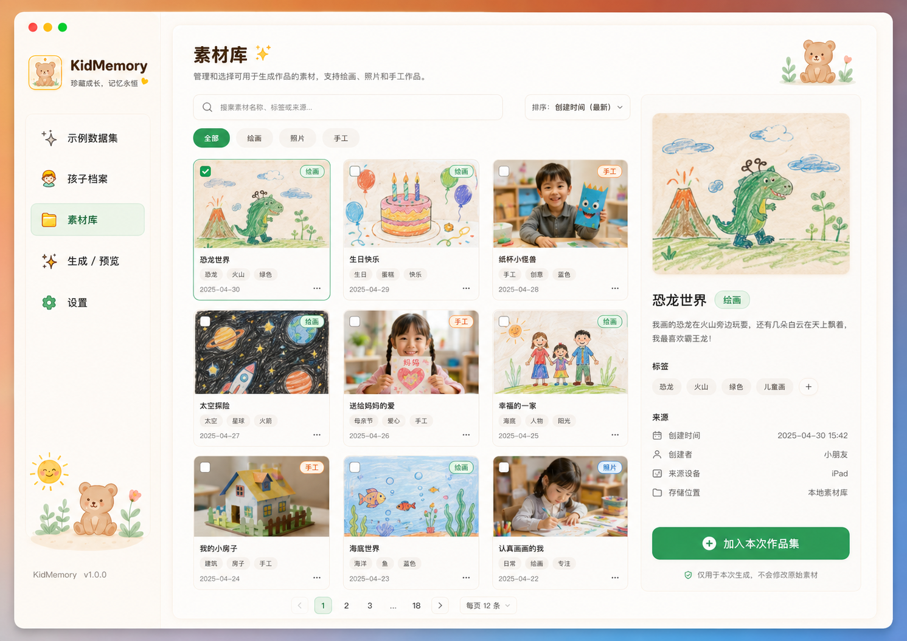
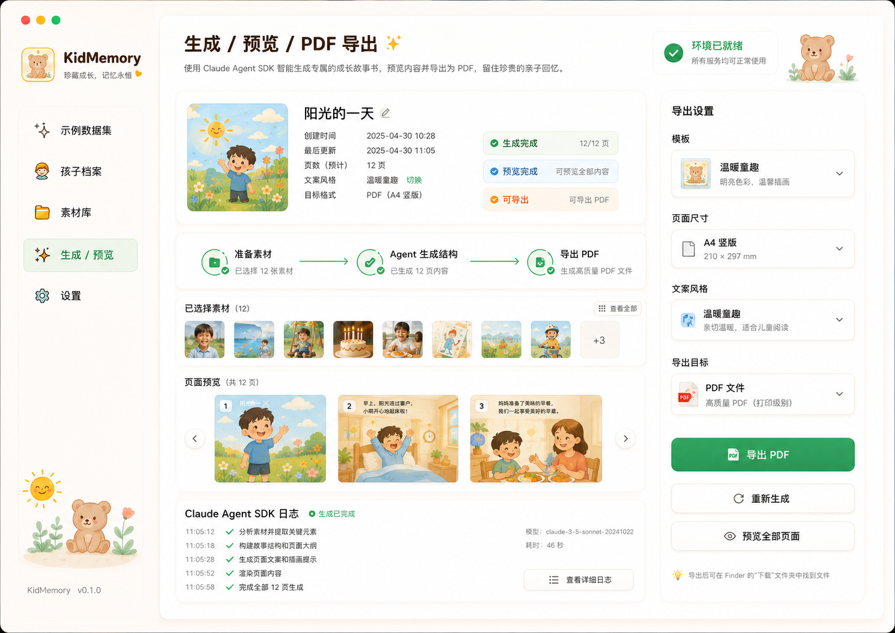
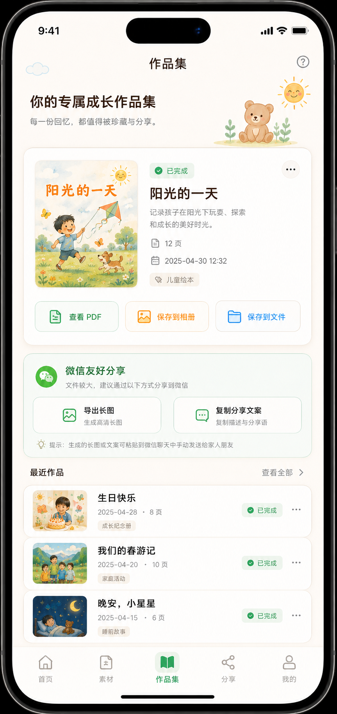
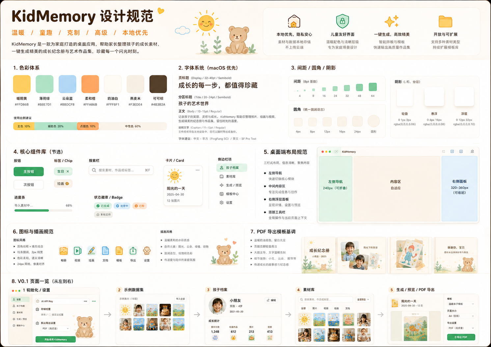

Curated, not piled up
孩子的画作、照片、手工和早期表达不应该只堆在相册里。它们需要被重新挑选、排序、连接成故事。
把孩子的照片、画作与成长瞬间，变成值得被珍藏的家庭记忆出版物。
KidMemory 是一个本地优先的 AI 家庭记忆出版系统。它不是相册，也不是模板堆叠工具，而是一条从素材采集、语义整理、Agent 生成到 PDF / 长图出版的完整工作流。


KidMemory 的最终态是一套家庭记忆工作台：桌面端长期管理素材，Web Companion 负责手机扫码采集与轻量浏览，语义搜索重新发现，Agent 生成书稿，系统负责校验、预览、导出和归档。
孩子的画作、照片、手工和早期表达不应该只堆在相册里。它们需要被重新挑选、排序、连接成故事。
Agent 像编辑助理一样整理素材、生成结构、修复输出，但家庭的判断和叙事权始终留在用户手里。
开源版从 macOS 桌面、本地文件、PostgreSQL + pgvector 和隔离 workspace 开始，把隐私和可迁移放在底层。
KidMemory 的体验不是“上传后生成一下”，而是从采集、整理、搜索、候选、生成、预览、导出到归档的连续工作流。
手机扫码上传、相册选择、桌面拖拽，让纸面作品和生活瞬间进入素材库。
为素材补充标题、标签、描述、时间、来源和孩子档案上下文。
用自然语言寻找素材，例如“找画了太阳的作品”或“找适合做封面的图”。
Agent 生成结构化书稿，系统校验并导出 PDF、长图与未来更多作品形态。
设计风格延续 KidMemory 的温暖、克制和童趣：柔和色块、清晰卡片、轻量插画感和真实产品界面共同服务家庭场景。

长期素材库是 KidMemory 的核心资产层。它保存的不只是图片，还有孩子、时间、语境、标签、描述、搜索向量和生成记录。

从候选素材到结构化书稿，再到 HTML 预览、PDF 和长图输出。

手机网页先承担扫码批量上传，后续扩展最近上传、作品集浏览、轻量搜索和亲友分享。
系统先准备独立 workspace，Agent 只读输入、模板与规则，只写结构化输出。数据库、密钥、对象存储、导出和恢复都由系统掌控。
每次生成先创建独立 job workspace，包含 input、templates、rules 和 output。
Agent 不直接访问数据库连接、API Key、对象存储凭据或本地敏感配置。
`book.json` 必须可校验，`book.html` 必须可预览，生成结果可追踪。
PDF、长图、备份恢复和失败重试由系统负责，保证作品稳定可打开。
KidMemory 把桌面工作台、私人素材库、语义搜索、Agent 生成、稳定导出和 Web Companion 采集合在同一条产品体验里，让家庭记忆从收集到出版自然流动。
macOS 桌面端承载孩子档案、素材整理、作品预览、生成任务和导出中心。
真实图片导入、metadata 编辑、标签管理、自然语言搜图、匹配原因和候选素材池。
Agent 在隔离 workspace 中生成结构化书稿，系统负责日志、校验、修复和稳定导出。
手机网页扫码进入 3 小时上传会话，单次最多 200 张，局域网优先，Supabase Storage 公网直传兜底。
Web Companion 承接最近上传、轻量浏览、作品集查看、PDF / 长图分享和亲友传阅。

KidMemory 把家庭素材库、语义搜图、Agent 书稿生成和作品导出整合在一个温暖的本地工作台里。孩子的作品被认真整理，父母的选择被保留，最终成品可以保存、打印，也可以放心分享给家人。
快速开始